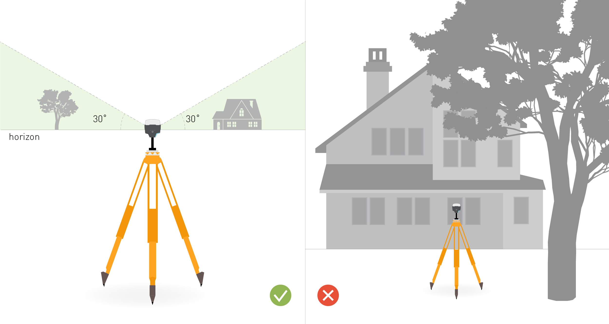
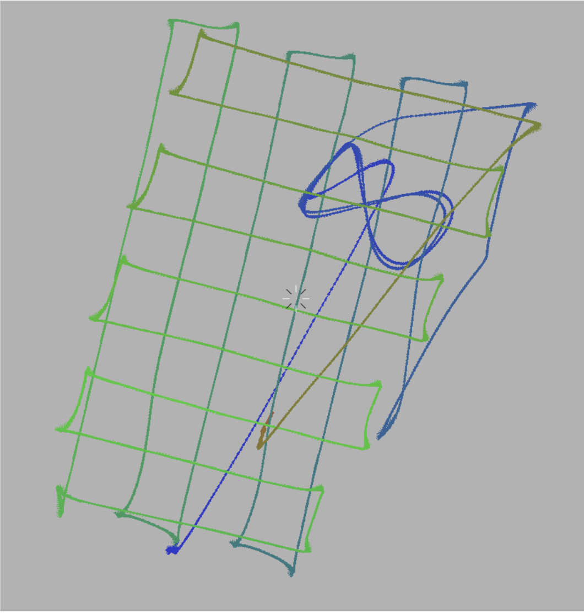
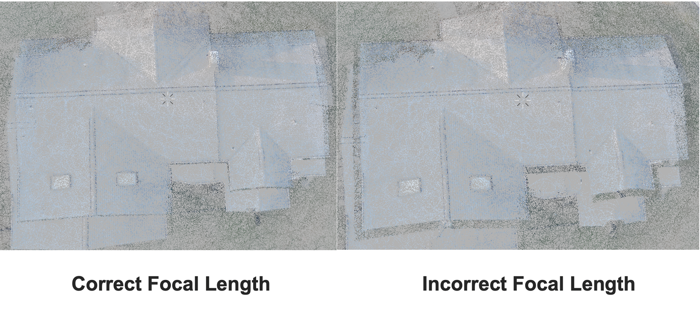
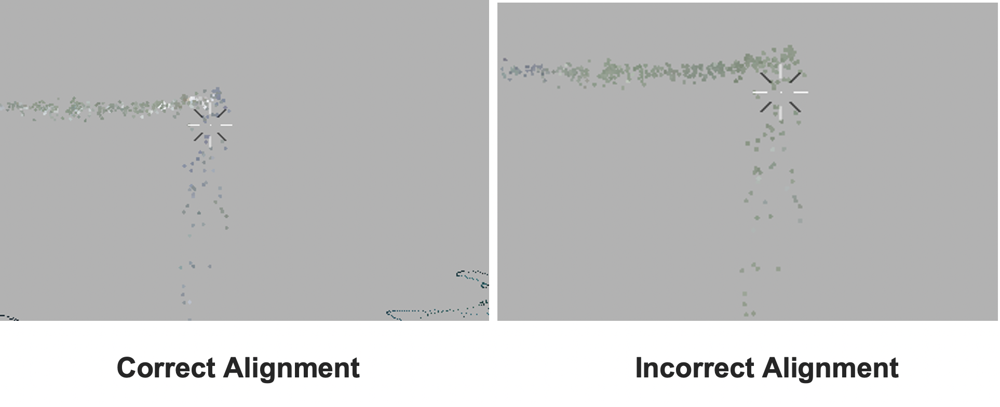
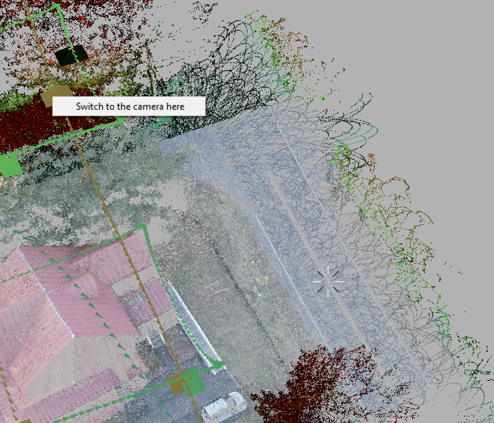
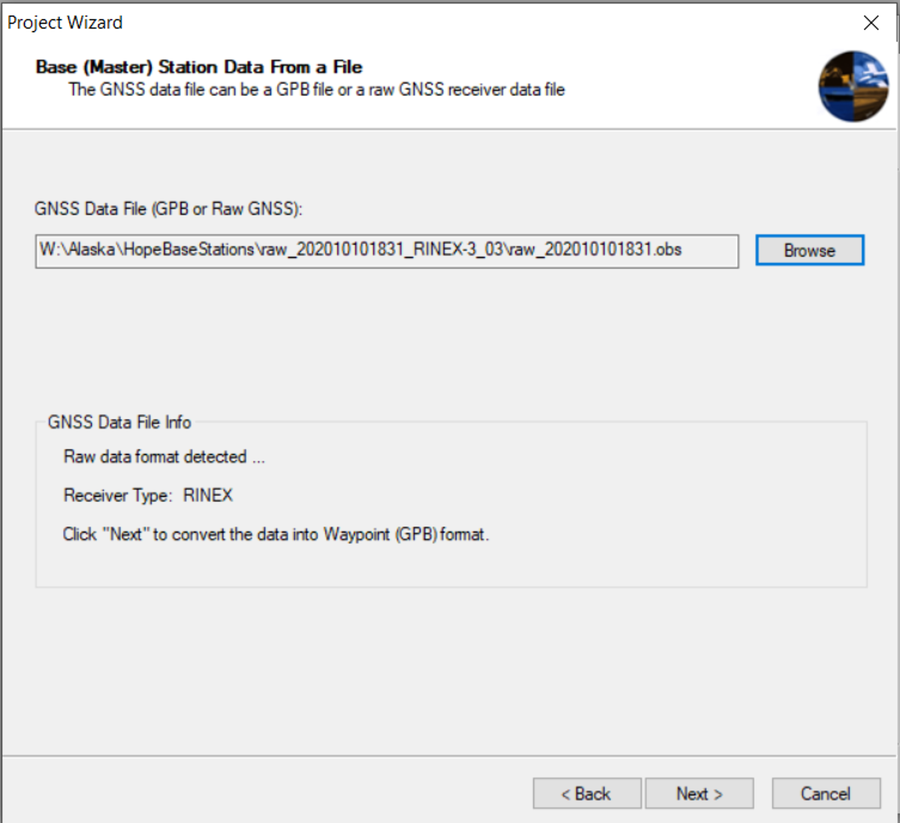
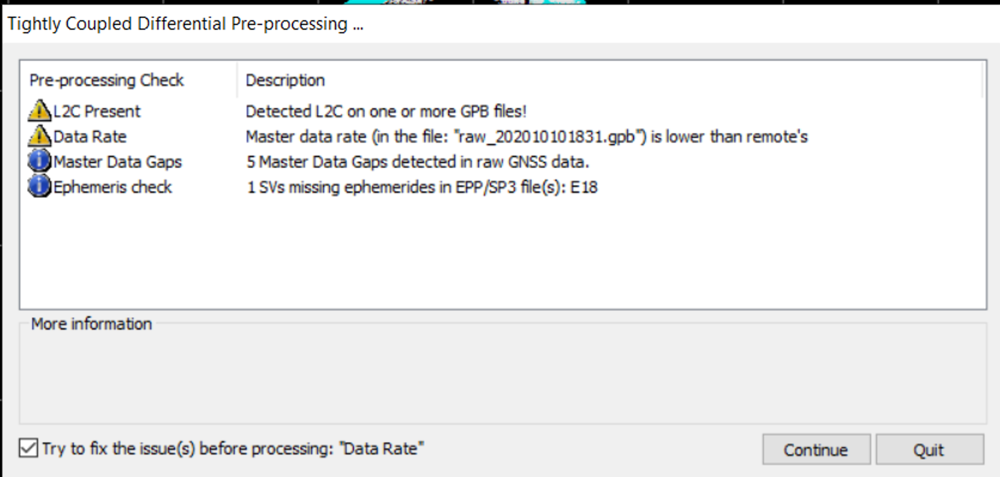
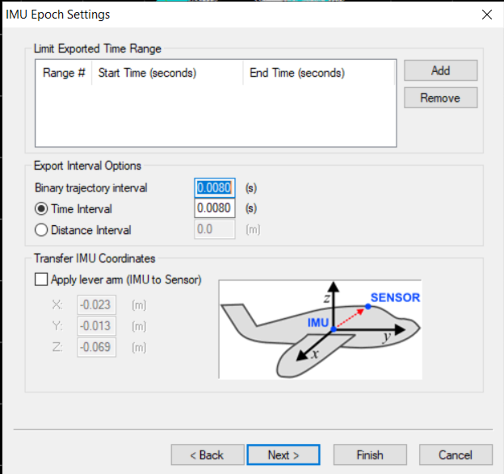
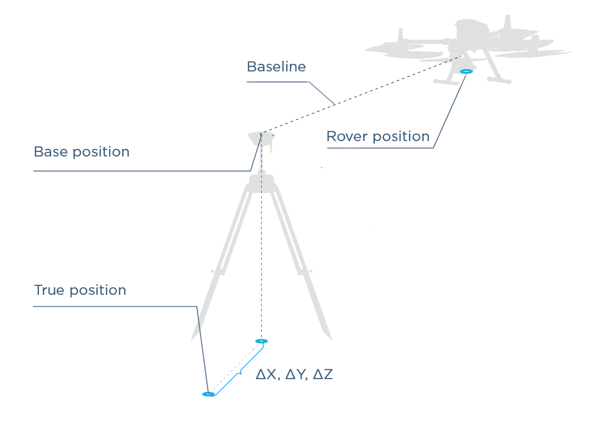

ROCK robotic Docs
Accuracy. Reliability. Simplicity.
Website: 'https://docs.rockrobotic.com'
©2021 Rock Robotic Inc.
Introduction¶
Welcome to your Rock Robotic LiDAR!


Package Contents¶
In the box:
- 1 x Rock Robotic LiDAR
- 1 x usb stick
- 1 x camera (optional)
- 1 x Hard case
- 1 x GNSS Antenna
- 1 x GNSS Antenna mount
- 1 x GNSS cable
- 1 x camera cable (optional)
Getting Started¶
Please follow our Quickstart Guide to start collecting data quickly.
Collaboration¶
This document can be edited on GitHub in markdown. If you find any mistakes, typos or pieces that are not documented well enough simply open an issue or contribute by sending a pull request.
Discussion¶
We are happy to answer any questions at community.rockrobotic.com.
Quickstart
A well-placed Reach base is essential for achieving good positioning results.
You can place your smartphone near the window in your house and it will obtain GNSS coordinates after some time, but for the ROCK Robotic LiDAR such environment won't be sufficient. For the R1A/R2A to work there are special requirements for placing the base.
Clear sky view without any obstacles¶
The base station needs to have a clear sky view 30 degrees above the horizon. There should be no obstacles that could block the view like buildings, trees, cars, humans, laptops, etc.
Take a look at 2 pictures below. The left picture demonstrates desirable conditions for the base location. The right one is an example of bad surrounding conditions such as the reduced view of the sky, possible obstructions or vegetation nearby.

Examples of good environments for base placement:
-
field
-
top of the hill
-
rooftop
Examples of bad environments for base placement:
-
indoors
-
urban area
-
forestry area
No electronics nearby¶
Electronic devices may produce RF noise that could affect the reception of the GNSS signal. Keep all electronics as far as possible from the base and the LiDAR.
Setting up the base¶
Learn more about placing the base from the dedicated article in our docs.
Mission Planning¶
In this section we will provide recommendation for mission planning software. These are 3rd party software and are only from our experience and recommendations. With all mission planning software a certain level of risk exists and you as a pilot must remain aware at all times.
Becoming an expert LiDAR mapper requires a good understanding of mission planning. I will get into all the details of the many little things to think about that will increase your efficiency and therefore productivity. But first, the basics. The quality of your LiDAR dataset depends on 3 factors:
- Flight Height
- Flight Line width
- Flight Speed
In this section We provide 2 recommended settings that will get you best results. Then for further understanding of complex job site, large area mapping planning, or structure mapping, we recommend you to our detailed tutorial series on mission planning.
Recommended Flight Control Software¶


First Setup¶
Intro¶
In this tutorial, we will walk you through the following steps:
- Attach the LiDAR to your vehicle
- Power on and connect to the LiDAR
- Configure the LiDAR
- Setup your base station
- Calibrate the LiDAR
- Collect data
- Retrieve data for processing
To do this, you will need Rock LiDAR itself, a smartphone or PC, and the vehicle.
Attach the LiDAR to your vehicle¶
The LiDAR can be attached to any number of vehicles in order to acquire LiDAR data. In this quickstart we will assume you are attaching the LiDAR to a drone. If you are attaching to another vehicle please refer to our Community for additional help.
Refer to the setup guide for your particular drone to connect the LiDAR.
Power on and Connecting to the LiDAR¶
Make Sure
Be sure to use the supplied usb drive. Only specific usb drive specifications will work.
First, ensure the supplied usb drive is inserted into the LiDAR. Then, power on the LiDAR. After powering up the unit, open Wi-Fi settings on your host computer (tablet, smartphone, or PC) and look for the wireless network labeled:
Tip
See Full Flight without using GUI for an even faster setup.
ROCKrobotic-######
Connect to this network using the following password:
rocklidar
Next, open up the web browser of your choice and go to the following web address:
192.168.12.1

Configure the LiDAR¶
In order to obtain as accurate as possible data from the LiDAR, the unit needs to be configured for the data acquisition vehicle. See Geometry Configuration for details. If using the LiDAR as designed and shipped from Rock Robotic, then this information will already be configured. If you are using a custom configuration, refer to the Community for additional help.
Setup your Base Station¶
A highly accurate trajectory is necessary for accurate results from the LiDAR. In order to obtain this accurate trajectory you must use a GNSS base station. We recommend the Emlid Reach RS2. Follow the Placing the Base for setting up your base station.
The base station should be configured to log Raw data in RINEX 3.03+ format for the entire duration of the LiDAR data acquisition.
Collect Data¶
When you are ready to start collecting data click the 'Start' button within the web interface.

The LiDAR, IMU, and GPS will all start collecting data. Proceed with your planned mission!
Note: To protect the user from accidently attempting to record data while the USB is unattached, the user does not have the ability to “Start” data recording in the “Status” window when the USB is unattached. When unattached the user will see the message shown below in Fig. 2-8. Message displayed when trying to record data while USB is unattached.

Take Flight¶
See the complete steps for taking off, calibrating, flying your mission, and landing.
Take Flight¶
Before each acquisition and at the end of each acquisition the LiDAR system needs to be calibrated.
Overview¶
Make Sure
Before proceeding to the LiDAR Calibration make certain the base station is setup and logging static RINEX measurements
Calibrating the LiDAR is an important step to collecting accurate data, and the procedure will be done twice at each acquisition session. One time at the beginning, right after you start the LiDAR from the WebServer. (See Connecting to LiDAR WiFi for information oh how to start the LiDAR from the web interface) and one time at the very end of your acquisition flights.
Procedure¶
Tip
See Full Flight without using GUI for an even faster setup.
Start the LiDAR¶
- Using the web interface, wait until you have 8 or more GNSS satellites. Then press the start button inside the data recording window.
Collect Static Data¶
- The LiDAR needs to get a static alignment. After you start data recording, then let the LiDAR sit completely still and allow a clear view of the sky and wait 15 seconds. Once the app interface says 'Waiting for high speed kinematic alignment' you can proceed to the next step.
Kinematic Alignment¶
- Take off and fly directly vertical.
- For at least 6 seconds fly greater than 5 m/s in a straight line in the forward direction of flight.
Fly figure 8 pattern¶
- Now fly 2 figure 8 patterns in the sky.

Fly your mission¶
- Great! Now the LiDAR is calibrated and you can begin flying your mission plan. Either upload the mission while still in the air or land upload and take off again!
Calibration Complete
Mid-mission Battery Change¶
If your mission will require multiple battery changes, fly directly forward back to the landing zone at a speed greater than 5 m/s. Once you get overhead, do not exceed 2 m/s in horizontal speed while you turn the drone and bring it in for a landing.
Keep the drone on the ground for no longer than 5 Minutes while you change the batteries. If you remain on the ground for much longer than 5 minutes you are better off proceeding to the End of Mission Calibration. Assuming you take off within the 2 minute window, take off and resume your mission.
End of Mission Calibration¶
At the end of your mission, fly directly forward back to the landing zone at a speed greater than 5 m/s. Once you get overhead, do not exceed 2 m/s in horizontal speed while you turn the drone and bring it in for a landing.
Once landed don't move the system for 30 seconds. This will capture a final static alignment dataset. Then you can connect via the web interface and stop collecting data and shutdown the LiDAR.
You are Done!
You can now remove the usb stick and proceed to pre-process the data
Quick Flight Checklists¶
Pre-flight¶
-
Ensure the LiDAR payload is secured to the drone, wifi antenna is attached, and GPS antenna is connected.
-
If using an external battery source for the LiDAR, ensure there is enough voltage for the mission.
-
Ensure there is enough space on the supplied USB stick for the flight.
-
Ensure your base station is logging RINEX data.
-
Power on the LiDAR payload and ensure no errors are being displayed on the status page.
-
Start recording data.
-
Let UAV sit completely still for at least 15 seconds once turned on.
Flight¶
-
Take off and fly directly vertical.
-
For at least 6 seconds fly greater than 5 m/s in a straight line in the forward direction of flight.
-
Fly two figure 8 patterns
-
Start the mission
Make Sure
If your mission will require you to change batteries, then the drone can only be on the ground for a very short period of time (1-2 minutes).
Landing¶
-
At the end of your mission, fly directly forward back to the landing zone at a speed greater than 5 m/s. Once you get overhead, do not exceed 2 m/s in horizontal speed while you turn the drone and bring it in for a landing.
-
Once landed, don't move the system for 30 seconds.
-
Log in to the LiDAR and stop collecting data.
Ended: Quickstart
LiDAR Details
Understanding the LiDAR Payload¶
The LiDAR payload is comprised of a high-grade Inertial Navigation System (INS), an internal computer, and a datalogger. It has 2 USB ports and a primary and secondary antenna port used to connect the drone to the payload.
The power button. The power button is utilized for a variety of functions.
Power On - To power up the unit, simply hold the power button until the 3 lights begin to glow.
Start Logging – After powered, tap the power button to begin logging data. The boot light will begin to flash between red and green, which indicates that the payload is beginning to log data.
Terminate Logging - To stop logging data, tap the power button again, which will make the boot light stop flashing.
Power Off - Shutting down the payload requires the user to hold the power button for about 4 seconds, after this let go and after a few seconds the 3 lights will turn off indicating that the payload has shut down. To perform a forced shut down, hold the power button for about 10 seconds and the lights will turn off.
Important note: For skyport applications, the drone supplies power to the payload, so it is important that the drone is powered on before the unit. With that relationship in mind, make sure to stop recording and shut down the unit before the drone. If this has not been done, the data from the flight may be lost.
Navigating the Web Interface¶
The navigation bar has three main menu options. “Status”, “Storage” and “Settings”. This section will discuss each menu window.
Status Menu Window¶
Beginning at the top, the “Status” option shows the current status of the LiDAR.

Below the “Status” option is the “Data recording” option. The user can toggle between Start and Stop.

Storage Menu Window¶

The Storage Menu Window shows the contents of the USB storage device when it is connected to the LiDAR and the user has clicked “Re-attach”. At this time the user will have the ability to access, download, and view stored files on the USB memory stick.
The storage indicator at the top of the screen will be green if storage space is within normal range. It will turn yellow when storage is at 75% max capacity, and turn red when it is at 95% max capacity.

You can download or erase data files by clicking on the download or trash icons.
Note: It is recommended to remove the USB drive from LiDAR and plug it into the host computer instead of downloading files over Wi-Fi. This method is much faster because scan files are usually quite large.
Settings Menu Window¶
To increase point cloud accuracy and configure specific settings for the LiDAR, use options from the Settings Menu Window. These settings are explained in more detail in the geometry settings section.
Connectivity Tab Window¶
The “Connectivity” tab has two sections: “Wireless Network” and “RTCM Corrections”.
In the “Wireless Network” settings the user can configure the LiDAR to connect to an external WiFi network (only WPA/WPA2 Personal networks are currently supported). If the network is not configured or not in range, the LiDAR will broadcast its own unique WiFi network, so you can always connect to it.
Firmware Tab Window¶
Rock Robotic may occasionally provide a firmware update for the LiDAR. Refer to the Firmware Update page for more information.
USB Drive¶
Make Sure
Be sure to use the supplied usb drive. Only specific usb drive specifications will work.
Additional usb drives can be purchased from Amazon.
Prepare USB drive¶
The usb drive must be formatted as FAT32.
FAT32Format GUI - Windows
Use Quick format with an allocation size of 32K.
Firmware Update¶
Rock Robotic may occasionally provide firmware updates. When this occurs, load the firmware update file onto the USB drive and connect the drive to the LiDAR.
Inside the “Firmware” tab window under “Settings” you can install firmware updates by clicking on the button labeled “Install”.

Geometry Configuration¶
IMU to Antenna Offset¶
In the “IMU to Antenna Offset” option enter the correct location of the antenna relative to the internal IMU using location of IMU center inside the LiDAR for measuring antenna offset.
The orientation of the IMU within the LiDAR is shown below:

"Right" refers to the "X" direction.
"Forward" refers to the "Y" direction.
"Up" refers to the "Z" direction.
The precise location of the IMU is depicted below in millimeters.

Vehicle to IMU Rotation¶
In the “Vehicle to IMU Rotation” option enter in the relative offset angles (axis misalignment; alignment angles) between the LiDAR and the carrier vehicle.

Yaw, Pitch and Roll should all be measured with respect to the axes on the carrier object (i.e. – the measured Yaw value is measured relative to the front-end of the carrier object).
Static Alignment¶
The “Static Alignment” option should be kept at 5 seconds (recommended) unless the carrier vehicle is unable to remain in a static position for this amount of time. When data-recording is started on the LiDAR, gyro biases will be estimated and used in data filtering processes.

Connectivity¶
External WiFi networks can be useful for supplying differential GNSS corrections to the R1A/R2A for RTK trajectory generation.
In the options for “RTCM Corrections” the user can choose the delivery method for corrections to the R1a. The options are: * USB RF Modem like Holybro 915MHz * NTRIP Client * TCP Server the R1a connects to * TCP Client connecting to the R1a’s pre-defined port
Click “Save” to save the changes. The R1a will immediately start trying to connect to the selected channel. * If “TCP Listen” is selected, the R1a will always listen on the port, and once a client connects to the port, the R1a will accept the connection. * If “USB RF Modem” is selected, the R1a will automatically detect connection of a compatible USB RF Modem and open the serial link. * If “NTRIP Client” or “TCP Connect” is selected, the R1a will keep trying to connect to the specified address until it succeeds.
Once a connection is established, the R1a will start sending its position in a NMEA0183 $GPGGA message, so a virtual reference station can be generated. Real base stations ignore those messages. Once the R1a receives RTCMv3 corrections, it will use them to compute RTK position. It will also record the RTCMv3 messages it has received while recording data, so they can be used for post-processing as well.
Click “Restore” to discard any unsaved changes.
Boresighting¶
The R1A / R2A – consists of a LiDAR and an Inertial Navigation System (INS). In order to accurately georeference the point clouds generated by the LiDAR it must be aligned with the Inertial Measurement Unit (IMU) of the INS used to generate georeferenced trajectory. Moreover, each laser in a multi-laser LiDAR, like the Velodyne VLP-16 used in R1A/R2A, must be properly aligned. This alignment process is called "Boresighting", and is described in this manual. Boresighting is performed based on a scan of an area having a special feature: a tall vertical edge. This edge can be a corner of a building or a tall tower or pole. The scan can be done using a multi-copter drone or a car as the carrier vehicle. Generally, car boresighting is more convenient, but drone boresighting may be preferred if the area used for boresighting is not suited for a car to drive in the necessary pattern during procedure. This document discusses car boresighting.
LiDAR boresighting and calibration – drive pattern¶
Drive Pattern Notes:
- Red lines are critical – they need to be performed as specified
- Blue lines are not critical – they can be performed anywhere
- Velocity on the red lines should be \<5 m/sec
-
Before and after the boresighting pattern, the following convergence maneuvers must be performed to ensure good observability of IMU heading:
-
Straight drive forward, for duration of at least 5 seconds, at least 5 m/sec
- Left and right turns in motion, at least 90 degrees each
- Boresighting pattern
- Left and right turns in motion, at least 90 degrees each
-
Straight drive forward, for duration of at least 5 seconds, at least 5 m/sec
-
LiDAR should be mounted on the vehicle with its axis pitched up about 15 degrees
LiDAR laser alignment parameters¶
The Velodyne VLP-16 lasers have the following misalignment angles:
- Common for all lasers:
- Yaw offset between IMU and LiDAR
- Pitch offset between IMU and LiDAR
- Roll offset between IMU and LiDAR
- Individual for each laser:
- Rotation offset ("Azimuth") of the laser (zero for one of the lasers used as reference, because this offset is coupled with roll offset between IMU and LiDAR)
- Conicity offset ("Elevation") of the laser (if the laser is perfectly calibrated, then it is the LiDAR reference elevation, zero for laser #1)
Each alignment parameter has its own effect on scan line positions for the back and forth scans of the critical area above.
Here is the effect of each parameter on laser #1 clouds from East-West scan of the Critical Area when the pitch of the LiDAR axis is 15 degrees.
It is assumed that when the alignment parameters are correct, all edges in the critical area match in each of the scans (forward and backward).
That means:
- The IMU-antenna offset is correct.
- the IMU heading convergence is good.
- The IMU-LiDAR linear offsets are set correctly.
Blue shows the scans when all alignment parameters are correct. Pink shows the scans when the respective alignment parameter is incorrect.

Obviously, edge mismatches in Pitch, Roll, and Elevation are very well observable between back and forth scans of the critical area. They can be corrected separately from each other by aligning the appropriate edges in the two clouds.
Yaw offset, however, has very poor observability. It just moves the vertical edge horizontally in the same direction in both clouds, for example, forward (West) in the West scan and backward (West again) in the East scan.
This is where the North-South scan becomes helpful. If we look at both scans of the critical area from the top after correcting all other alignment parameters, we will see the effect of Yaw immediately.
Here, in a zoomed view of the critical area, blue is the East-West scan (both directions), pink is the North-South scan (both directions).
 |
 |
The edges from the two sets of clouds can be aligned by adjusting the Yaw offset.
So, if all parameters of laser #1 are incorrect, the clouds will look like this (blue is the East scan, pink is the West scan):

After adjusting Roll, the clouds will look like this:

Now, let's focus on the bottom of the vertical edge for adjusting Elevation.
Before:

After:
And then, the top of the vertical edge for adjusting Pitch.
Before:
After:
One catch is that after adjusting Yaw:

We get back to the side view of the East-West scan, and see this in zoomed bottom of the vertical edge:

That is because Yaw and Roll are slightly coupled because of LiDAR tilt of 15 degrees. So, the final step is to refine Roll adjustment:

This finalizes the LiDAR boresighting and reference laser calibration.
Calibrating all lasers¶
Calibration workflow starts with boresighting using one laser. It can be any laser; the only difference is that the laser used for boresighting will have a zero Azimuth offset. All other lasers will have Azimuth offsets relative to the reference laser.
The reference laser is selected in PCMaster software, where its Azimuth offset is set to zero, the trajectory parts for both directions of North-South and East-West scans are selected and the boresighting process is done as described above.
Then, the Roll is changed and clouds regenerated until top and bottom edges of the building are aligned in the East-West scans. They will also be aligned in the North-South scans.
After that, the Elevation is changed to align the vertical edge of the building at the altitude of the LiDAR in the East-West scans. It will also be aligned in the North-South scans.
If the vertical edge is not aligned at the top of the building, Pitch is changed until it is aligned.
Then the Yaw offset is corrected. For that, the vertical edge from both East-West and North-South scans is aligned.
And the last step is refining the Roll offset.
After the reference laser is calibrated, it is selected in PCMaster in pair with each of the other lasers. Then, the vertical edges from the two lasers are aligned by changing the other laser's Elevation, and the horizontal edges are aligned by changing the other laser's Azimuth. The reference laser's Azimuth must remain zero.
Before (reference laser is blue, the other laser is pink):

After:
Sensitivity and range¶
This boresighting method uses the fact that linear mismatches caused by angular offsets grow with distance. The rule of thumb is that every milliradian (0.06 degree) of angular offset will produce 2 cm of linear mismatch between the two clouds for every 10 meters of distance to the wall. That means, the wall should be as far from the trajectory as the lidar range allows to reach the top of the wall. Having the wall 40-50 meters away will result in an 8-10 cm mismatch for every milliradian of angular offset.
One exception is the Pitch offset. Its observability depends on the height of the building. Every 10 meters of height will produce 2 cm of mismatch at the top for every milliradian of Pitch offset. That means, the building used should be as tall as possible.
Scanning with a low velocity allows for the increase of scan line density, which results in a better visibility of edges. It may also be beneficial to decrease the LiDAR scan rate to 300 RPM to increase the angular resolution of the scans.
Storing the computed values¶
PCMasterGL, the software that is used for boresighting and laser calibration, saves the computed values in the PCMaster Project file. This file can be loaded onto the LiDAR device using the LiDAR Web interface. After that, the values will be recorded in the LiDAR scan files on the LiDAR device, and when those files are loaded in a newly created PCMaster Project, the values will also be automatically loaded there. In order to store the values, open the LiDAR Web interface and go to the Settings-\>Boresight page. Then, click "Read from PCMaster project" and browse for the PCMaster Project file. After the file is selected, the computed values will be extracted from the file and stored in the LiDAR non-volatile memory.
Camera Boresighting¶
The LiDAR Payload– consists of a LiDAR, an INS, and a camera. In order to accurately create a colorized point cloud generated by the LiDAR and the camera, the camera must be accurately aligned with the Inertial Measurement Unit (IMU) of the INS. This is used to generate a georeferenced trajectory. Moreover, some of the camera calibration parameters must be edited to align the images with the point cloud. This alignment process is called “Boresighting” and is described in this manual. Boresighting is performed based on a scan of an area having a known structure. This structure can be a pole or a building or a car. The scan can be done using a multi-copter drone. This document discusses drone camera boresighting.
Camera Boresighting and Calibration¶
Before the boresighting pattern, the following convergence maneuvers must be performed to ensure good observability of IMU heading:
- Fly straight forward, for a duration of at least 5 seconds, at a speed of at least 5 m/sec
- Left and right turns in motion, at least 90 degrees each
- Boresighting pattern (2-3 figure-eights)
- Left and right turns in motion, at least 90 degrees each
- Fly straight forward, for a duration of at least 5 seconds, at a speed of at least 5 m/sec
Below is the trajectory of an example of a proper boresighting flight path.

Camera Image Alignment Parameters¶
All cameras have the following alignment parameters:
Angular Offsets
- Yaw offset between the IMU and the Camera
- Pitch offset between the IMU and the Camera
- Roll offset between the IMU and the Camera
Camera Calibration
- Focal Length
- Pixel flatness
- DistortNum
- DistortDen
- DeltaX
- DeltaY
- VignetteNum
- VignetteDen
- Red
- Green
- Blue
- Saturation
Note
Most camera calibration parameters do not need to be changed from their default values unless explicitly stated by the manufacturer. Parameters that are rarely changed will not be covered in the manual.
Each alignment parameter has its own unique effect on image positions in relation to a structure.
It is assumed that when all alignment parameters are correct, the image fits the size of the structure properly, and all the edges of the image align and match the edges of the structure.
In this manual, we will examine the effect of angular offsets and key camera calibration parameters on the image below. The dark rectangle is the position and orientation of the camera in flight that was projected on to the point cloud. The white lines are provided as a frame of reference for when the manual is describing the effect of changing offsets on the position of the image.

When using a structure like a house for camera boresighting, the most important areas to note are apexes of the roof as well as the edges of the roof.

The pitch offset effects the displacement of the image in the side-to-side direction. This is indicated by the edges of the building beginning to take the color of the grass beneath it. These edges are circled in red. As a result, the coloring of the building spills into the grass on the areas circled in blue.

The roll offset of the camera effects the movement of the image in the forward and backward direction. This is evident by the shift in colorization in the images. With incorrect roll offset, the house takes on the color of the grass at the near edge of the roof and the right edge of the roof from this point of view. In addition, the colorization of the far edge and left edge of the roof begins to spill into the grass.
The yaw offset will cause the image to rotate. In this example, the goal is align the edges of the image with the edges of the roof and the sets of two dark lines with the ridges of the roof. Below is an extreme example of yaw misalignment.

It is evident that the image is extremely rotated in the counterclockwise direction. This example is purely to show the effect of yaw offset on the image projection over the cloud. Such an extreme inaccuracy in yaw offset is quite unlikely and users will rarely encounter a situation like this. To see the effect of smaller yaw offset inaccuracies, we will use more zoomed in images focused the ridges of the roof.
Below is the effect of yaw offset the largest ridge of the roof which ran horizontally in the previous images.

It takes a much smaller yaw offset to affect the colorization on the ridges of the roof. When using a building for camera boresighting, the ridges of the roof are a good place to check yaw offset accuracy. In this case, the yaw offset is correct when the dark lines on each side of the roof runs straight since it is previously known that this ridge is straight.
The last major parameter for camera boresighting is focal length. The focal length determines the size of the projected image. Below is a comparison of images with correct and incorrect focal lengths.

It is evident that the focal length changes the size of the image by the colorization of the image with the incorrect focal length. The edges of the roof have taken on the color of the grass, indicating that the image is too small.
Checking Camera Boresighting¶
Once you are satisfied with the position and orientation of the image projected on the structure, there are a few ways to verify boresighting values.
One good way to verify boresighting is by looking at a power line, if possible, as shown below. When verifying a powerline, look for any distortion of the image or look for any incorrect colorization of the pole and the ground around the pole. These are both key indicators of misalignment. Below is an image detailing the difference between a well boresighted power line and one that is misaligned.

In this example, the pitch offset is misaligned. As a result, the colorization of powerline was projected over the pole instead of the powerline itself.
Another good way to check boresighting is to examine any cars within the point cloud. The windshields of cars do not reflect the lidar, so it is a good idea to see if the windshield lacks colorization and if any points around the car are incorrectly colored. A comparison of correct and incorrect colorization of cars is shown below.

In this example, the incorrectly boresighted point cloud has an incorrect roll offset. This is indicated by the windshield of the car being colorized, as indicated by the red circle.
Lastly, a very good way to review boresighting is using a road. Using lines on a road is a good way to make sure that the camera boresighting values are accurate. In this example, we will examine the double yellow lines on a road. First, right click on a rectangle representing the camera position and orientation that will project an image on a road, and select “switch to camera here” as shown below.

Then place the cursor on in between the lines depending on the road that is being used. In this scenario, we will place our cursor between the yellow lines as shown below.

Zoom out from the point cloud without moving the cursor and then select a new camera orientation that will project an image on the road like shown.

After the new image is selected, zoom in to where your cursor is. If the cursor is still on the same portion of the road as that on the previous image, then it is a good indicator that the camera boresighting is correct. In this example we see that the cursor is still directly between the two yellow lines, just like it was when the previous image was projected.
Storing the Computed Values¶
PCPainterGL, the software that is used for boresighting and camera calibration, saves the computed values in the PCPainter Project file. This file can be loaded onto the device using the web interface. After that, the values will be recorded in the camera image files on the device, and when those files are loaded in a newly created PCPainter Project, the values will also be automatically loaded there. To store the values, open the web interface and go to the Settings -> Camera page. Then, click “Read from PCPainter project” and browse for the PCPainter Project file. After the file is selected, the computer values will be extracted from the file and stored in the LiDAR Payload non-volatile memory.
R2A Physical Dimensions¶

GNSS Antenna Specifications¶
The ROCK Robotic LiDARs are typically packaged with the Tallysman HC977 helical antenna.
Ended: LiDAR Details
Rock Robotic Pre-processing
Introduction¶
The ROCK Robotic R1A consists of a LiDAR and an INS. The data gathered from both devices must be fused together to get LiDAR points geo-referenced – transformed from the LiDAR reference frame to geographic coordinates.
The steps for taking the raw data and converting it to a point cloud are as follows:
- Create a highly accurate trajectory
- Use that trajectory to create the point cloud
- (Optional) Colorize the point cloud with imagery.
Platform Requirements¶
PCMasterGL works on Windows 10 x64 (MacOS and Linux x64 versions are in development). The key requirement for seamless visualization of large point clouds is a fast GPU with large video memory (dedicated or shared). The software has been tested on nVidia GeForce GTX graphics cards, but it is hardware independent. The rule of thumb is 1 GB of memory for every 15 million points in the cloud. The current software limit is 800 million points. Fast data processing also requires a fast CPU.
Recommended computer specifications:
- Intel Core i7 or better
- 32 GB RAM
- Nvidia GeForce GTX 1050 Ti or better
- Windows 10 x64
Make Sure
Do not process the data when it is still on the usb drive. It is too slow for processing. Transfer to your computer first.
Activate "Embedded" Novatel License¶
PCMasterGL provides automated post processing powered by NovAtel Waypoint Inertial Explorer for users that purchased their LiDAR payload with the embedded Inertial Explorer license. In order to use this embedded feature you must ensure that you have PCMasterGL version >2.x. Additionally, before processing inertial data, you must activate your Inertial Explorer license through the NovAtel Local License Manager in the RockRobotic root folder.
The pathway to the Local License Manager should look similar to this:
C:\RockRobotic\PCMasterGL
From there, open the application “LLMform” and the window shown below will open.

Then, select the tab “Activate License” on the left side of the window and input your license key to the field named “Activate License:”. Be sure to include the dash marks in the license key like shown in the example below.
Example: xxxx-xxxx-xxxx-xxxx-xxx
After this, select “Activate” and your license will be activated.
Activate "Stand-alone" Novatel License¶
If you have a stand-alone Novatel License, then you will need to activate your license by following the steps provided by Novatel.
Step 1 - Create a highly accurate trajectory using "Embedded" Inertial Explorer
Or
Step 1 - Create a highly accurate trajectory using "Stand-alone" Inertial Explorer
Embedded Trajectory Processing¶
After activating the license, PCMasterGL is now capable of automated processing of inertial data. First, the user must manually add the base station RTCM or RINEX files from the time of the flight or drive to the “ins” folder of your project directory.
If RINEX files are used from an Emlid Reach RS2, be sure to place both the .obs and .nav files in the "ins" directory.
Make Sure
Do not process the data when it is still on the usb drive. It is too slow for processing. Transfer to your computer first.
Once this is added, simply open the PCMasterGL project named “ppk” within your project directory.
PCMasterGL will detect that the trajectory has not yet been refined and will automatically begin to run the trajectory processor. This will be indicated in the bottom left corner of the window like shown below.

If PCMasterGL does not automatically detect your base station files you will receive the message “Base measurements file was not found – select the new one” at the top of the window. Simply select the aforementioned base station RTCM or RINEX (obs) file that was added to the “ins” folder and click “open”.
PCMasterGL will resample the base file and process the GNSS trajectory. The graph shown below plots the East, North, and Vertical separation of the forward and reverse trajectories. For aerial applications, it is expected to have a spike in separation during the takeoff and landing, and then become fixed during the flight.
Then, it will begin to correct the antenna lever arm. This is done by processing the loosely coupled IMU-GNSS position misclosure. The misclosure plot will appear thinner after each iteration, indicating that the lever arm is more accurate.

Lastly, the attitude separation is calculated for heading, pitch, and roll. This separation is representative of the difference between the forward and reverse processed trajectory values. The attitude separation is only problematic if it is above 4 arcminutes for heading and above 1 arcminute for pitch and roll. As seen below in this example, the attitude separation does not eclipse 1 arcminute for heading, pitch, and roll, indicating that the attitude separation is very good.
Once the PPK trajectory is calculated, PCMasterGL will automatically begin to load the trajectory and lidar files and will populate the visualizer with the point cloud.
Step 2 - Create the pointcloud
Trajectory Processing¶
In order to have a highly accurate point cloud the exact position of the LiDAR unit must be calculated. Inertial Explorer is used to create this highly accurate position file.
Prerequisits¶
- Inertial Explorer installed on your computer
- Data from an R1A LiDAR scan
- A base station RINEX file
- The precise position of the base station
Make Sure
Do not process the data when it is still on the usb drive. It is too slow for processing. Transfer to your computer first.
Install Inertial Explorer User Settings¶
After Inertial Explorer is installed for the first time you will need to apply some user settings.
Unzip and place these configuration files inside C:\NovAtel\InertialExplorer890\resources\User
Process Trajectory¶
Start Inertial Explorer
Select File -> New Project -> Project Wizard
Welcome to the Project Wizard (click 'Next')

Browse and select the 'Rover' data. This data will be found in the ROCK folder on the R1A thumbdrive. The file will end with -gnss.gps Select the checkbox 'I have IMU data file in Waypoint (IMR) format'. Browse and select the -imu.imr file inside the ROCK folder.
Click 'Next'
Remote (Rover) Antenna Height -- Do not change settings, simply click 'Next'
Base (Master) Stations -- Select 'Add Station from File' -> 'Next'

Browse and select the *.obs RINEX file that you recorded from your base station.

Base (Master) Station Information
Enter the precise coordinates of the base station. Enter the precise height of the base station antenna above the ground in 'Measured height'. NOTE: This is the height of the tripod plus the height from the bottom of your receiver to the antenna. Your GNSS receiver manufacturer will tell you the height from the bottom of the receiver to the antenna. For instance, the EMLID Reach RS2 is .134 meters.
Then click 'Next'
Base (Master) Stations
Click 'Next'
Project Overview
Click 'Finish'

Unprocessed Map
You will now see the unprocessed trajectory like this:

Process TC (Tightly Coupled)
Select Process -> Process TC (Tightly Coupled)

In Processing Settings select:
- Processing Direction 'Both' and Multi-pass
- 'IL INS (UAV)' profile
- De-select 'Read rotations and lever arms from IMR file'
The first time processing data with the R1A on a particular drone, you need to 'Solve lever arm'
Click the down arrow next to 'Process' and select 'Solve lever arm'
This will determine the X, Y, Z offset for the gnss antenna to the IMU. You will want to 'Solve lever arm' multiple times. Between each run select the 'Average' and run again.
After 3 or 4 times the lever arm will converge and you will know the lever arm.
Once the lever arm is determined, you can create a vehicle profile so you wont have to calculate the lever arm again.
Now click 'Process'
If pre-processing checks pop up, select 'Try to fix the issue(s) before processing' -> Continue

Export Wizard
Once processing is complete select 'Output' -> 'Export Wizard'
Name the exported file and select PCMasterGL in the profile -> Next
File name and Location
In order for the next processing steps to work smoothly, ensure you place the exported file in the pre-created 'ins' directory and name the file 'ppk.txt'.
It should look like this ROCK-XXXX-[DATE]/ins/ppk.txt
Select 'Use processing datum' -> Next

IMU Epoch Settings -> Finish

You will now have a highly refined trajectory file that you can use with PCMasterGL.
Step 2 - Create the pointcloud
Point Cloud Processing¶
Overview¶
The ROCK Robotic LiDAR consists of a LiDAR and an INS. The data gathered from both devices must be fused together to get LiDAR points geo-referenced – transformed from the LiDAR reference frame to geographic coordinates. The PCMasterGL software is designed just for that. Additionally, it observes and corrects for misalignments between the INS and the lasers of the LiDAR. PCMasterGL software takes INS trajectory generated by a Post-Processed Kinematics software and LiDAR scan files generated by the ROCK LiDAR system and converts them to point clouds in LAS format for further processing.
Two workflows are possible: full workflow for checking and adjusting misalignments; and quick workflow for cases when the system was previously calibrated, and the calibration data is stored on the ROCK LiDAR. The latter can be further sped up to batch workflow using a pre-defined project and zero user input.
Platform Requirements¶
PCMasterGL works on Windows 10 x64 (MacOS and Linux x64 versions are in development). The key requirement for seamless visualization of large point clouds is a fast GPU with large video memory (dedicated or shared). The software has been tested on nVidia GeForce GTX graphics cards, but it is hardware independent. The rule of thumb is 1 GB of memory for every 15 million points in the cloud. The current software limit is ~800 million points. Fast data processing also requires a fast CPU.
Recommended computer specifications:
- Intel Core i7 or better
- 32 GB RAM
- Nvidia GeForce GTX 1050 Ti or better
- Windows 10 x64
Make Sure
Do not process the data when it is still on the usb drive. It is too slow for processing. Transfer to your computer first.
Prerequisites¶
- Trajectory File (see Trajectory Processing)
Quick Workflow¶
Quick workflow is designed for fast LAS file production when the offsets and the calibration values are already stored in the ROCK LiDAR. The ROCK LiDAR is delivered to customers fully calibrated. Therefore, the quick workflow is all that is needed 99% of the time.
-
Move the project data from the USB stick to your local hard-drive. This will ensure the highest speed of processing.
-
Navigate to the project folder and double click to open the ppk.pcmp file.
ROCK-XXXX-[DATE]/Processing Files/ppk.pcmp
This will open up PCMasterGL with your project files and the trajectory that you processed in the previous step.
Selecting Your Flight Lines¶
- Once the trajectory appears it should look similar to:
Make Sure
If the flight lines look all red and you cannot select your trajectory, that means the full trajectory is already selected. Simply navigate to Paths and remove the path and proceed to the next step.
-
Right-click at the blue end of the trajectory and select " Start selection here".
-
Right-click at the red end of the trajectory and select " Finish selection here".
Make Sure
You want to start your selection at the beginning of your flight line and finish your selection at the end of the data acquisition portion of the flight. This means that the calibration part of the flight at the beginning and the flight back to the landing zone should not be included.
Your first selection will now look like this:
Slow
If you have an underpowered processing computer you can select Lasers and uncheck Display to prevent PCMasterGL from rendering all of the laser points.
-
If you required a battery change in the middle of your flight, then select multiple start/stop combinations so that only the flight lines over the data acquisition target are included in the selections.
-
Click Cloud Filter.
-
Set the distance filter so that false points very close to the sensor are ignored. Here I selected to keep points which are betwee 4 and 200 meters from the sensor.
-
Click Produce LAS and save the project when asked.
You now have an LAS file! If you have a co-aligned camera, then proceed to Pointcloud Colorizing
Otherwise Upload to the ROCK Cloud for post-processing
Full Workflow¶
Full workflow is designed for scans where the misalignment angles are to be checked or adjusted. The workflow consists of the following steps:
- Trajectory loading
- Scan files loading
- Linear offset verification
- Calibration path selection according to guidelines outlined in Boresighting Manual
- LiDAR boresighting using one laser
- Laser calibration for all other lasers
- Path selection for point cloud export
- Optional cloud filter configuration
- LAS export
In full workflow, designed for laser calibration and boresighting, the steps are:
- Click " New Project" – select the trajectory file and the scan files when asked. All scan files should be selected at the same time.
- PCMasterGL will load the data and pre-process scan files. It will also load the LiDAR orientation, the offsets and laser calibration values that were stored on the LiDAR. The trajectory will be displayed, colored from blue at the beginning, to red at the end.
- Verify LiDAR orientation and that it matches the actual orientation of the unit during the scan. It should most likely match.
- Verify Linear offset and that it matches the reference values provided by the manufacturer.
- Find a place in the trajectory where calibration values can be observed, per Boresighting Manual.
- Select the paths in the opposite directions in both legs of the boresighting pattern as separate segments:
- Right-click on the beginning of the trajectory segment and select " Start selection here".
- If the position is incorrect, Right-click on the correct position and select " Restart selection here".
- Right-click on the other end of the trajectory segment and select " Finish selection here". PCMasterGL will highlight the selected segment and display the point cloud obtained for this segment, colored the same as the segment highlight.
- Repeat these steps for the other three segments of the boresighting path.
- Click the " Lasers" button and select the reference laser to adjust angular offsets. It should be a laser producing tilted lines. Depending on the LiDAR orientation, it can be laser 0, or laser 1, or laser 15 (for VLP-16 LiDAR). Ensure the " Azimuth" value is zero for the reference laser. Uncheck " Display" for all other lasers. The point clouds will only show the selected laser then.
- Click the " Paths"button and select the two path segments going in the opposite directions, say East and West, for example. Uncheck " Display"for all other paths. PCMasterGL will only display the selected paths.
- Turn the view in such a way so it looks along the bottom edge of the vertical wall. Observe the vertical mismatch between the path clouds.
- Click " Angular Offset" and adjust the Roll offset while observing the clouds moving. Use PgUp or PgDn to change the value by 0.1 degree and Up or Down to change by 0.01 degree. Hint: The offset window can be moved away from the main window and kept open while doing other adjustments. Another hint: Use the mouse wheel with Shift to get the telephoto view with no perspective for better observability of mismatch.
- Rotate the view to look along the vertical edge, open the " Lasers" window and adjust the " Elevation" offset of the reference laser to align the vertical edges. The wall planes may be misaligned because of the Yaw offset of the LiDAR, which will be adjusted later. Hint: the laser controls window can be kept open while adjusting other values as well.
- If the wall edges are aligned at the bottom but not aligned at the top, adjust the " Pitch" offset to align them.
- Select the other two paths and align all four vertical edges by adjusting the " Yaw" offset.
- Select other lasers one by one and adjust their " Azimuth"offsets, aligning the horizontal edges; and their " Elevation" offsets, aligning the vertical edges of the same wall.
- Verify the quality of calibration by selecting all lasers together and verifying that all clouds are aligned.
Cloud adjustments can be more visible if a thin slice is created:
- Move the focus point where the back plane of the desired slice will be, right-click, and select “Start slicing at the focus point”.
- Move the focus point where the front plane of the desired slice will be. The slice will be created and changed while the focus point moves. The slice does not have to be parallel to the vertical plane. If the focus point changes its altitude (by holding Ctrl while dragging the focus point) the slice planes will be tilted or even horizontal.
- If you need to change the starting point, right-click and select “Restart slicing at the focus point”.
- Right-click at the spot where the front plane will be and select “Finish slicing”. After that, moving the focus point any further will not affect the slice.
- If you need to move the slice, hold Ctrl and scroll the mouse wheel to move it back and forth across the slice plane.
- If you need to make the slice thinner or thicker, hold Ctrl and Shift and scroll the mouse wheel.
Now the calibration segments can be removed by clicking " Delete" for each of them in the Path controls window. Then the full trajectory can be selected for LAS file export as in the next section for Quick workflow.
Also, the project can be saved using " Save Project" and imported into the ROCK LiDAR for storing the offsets and the calibration values.
Batch Processing¶
PCMasterGL can work with pre-created project files, where all the necessary values are already set. All it takes then is one button to produce a LAS file. It can even be scripted if PCMasterGL is run with the project file for argument and the "batch" option. In that case, 3DView is not even shown, only the LAS files are produced based on the project file contents. PCMaster Project file format (PCMP) is simple XML with self-explanatory structure shown below and can be edited or generated by a script. Path selection is measured in tenths of a second and can be set to 0 for start and an insanely large number like 2,000,000,000 for finish to select the whole trajectory.
PCMasterCL – Command Line Interface¶
Versions of PCMasterGL after (and including) PCMasterGL version 1.5.2.1 by default include the ability to generate point clouds from the command line.
After a project file has been created, the same project can be used to generate future clouds with the same configured settings using the command line which is much faster than directly using the graphical user interface.
To do this, start by creating a project in PCMasterGL and configure the settings you would like to be applied for current and future clouds that will be generated.
Save this project file to a location of your choice and right-click the project file and select "Process" to begin cloud generation from the command line.
To run a particular project file from the command line simply use the following command:
C:\ (location of PCMasterGL.exe)\> PCMasterCL.exe \<path to the project file\>
Step 3 - Pointcloud Colorizing
User Interface¶
PCMasterGL has a very simple user interface with a near zero learning curve. The main window is shown below.

The main window shows:
- Workflow control panel with
- buttons to perform actions on the current project, creating a new project, opening an existing one, saving it, changing filters and producing LAS files
- button to toggle display of different path segments on and off
- button to toggle display of different lasers on and off, and to adjust calibration of each laser
- buttons to adjust offsets
- Status bar showing the local plane position of the cursor and the dimensions of the measurement box
- Main 3D view showing current trajectory, currently enabled path segments and their point clouds from currently enabled lasers, the local plane axes, the cursor focused on the current position and the measurement box if measurements are currently being taken
The main 3D view can be controlled with as few as two mouse buttons, two keyboard keys and the mouse wheel.
To look at the focus from different directions press and hold Left mouse button and move the mouse.
To rotate the camera around its axis, press and hold Shift and Left mouse button and move the mouse.
To move the focus horizontally, press and hold Ctrl and Left mouse button and move the mouse.
To move the focus up and down, press and hold Ctrl, Shift and Left mouse button and move the mouse.
To move the camera closer to the focus, scroll the mouse wheel forward.
To move the camera away from the focus, scroll the mouse wheel back.
To make perspective smaller (telephoto view) press and hold Shift and scroll the mouse wheel forward.
To make perspective wider (wide-angle view) press and hold Shift and scroll the mouse wheel back.
These field of view changes are useful when a long plane is looked at from its side. When the camera is in the telephoto mode, all parts of the plane have the same visible thickness with no perspective. This is very useful for laser calibration and offset adjustment. In this mode trackball rotations are also slowed down for fine adjustments.
Right mouse button – when it is clicked, it opens the context menu with actions:
- Start, restart, or finish new path segment selection at the point where the mouse is now;
- Start, restart measurement at the current focus point or stop measurement;
- Switch point cloud coloring between by-segment and by-laser.
Mouse buttons and wheel work the same way on touchpads, including multi-touch ones with mouse wheel modeled by zoom-in multi-touch pattern.
Workflow Control Panel¶
Workflow control buttons are:
- New Project – clears the current data if any and asks for the new trajectory and new scan files. New data are loaded, and the trajectory is displayed. Calibration values and offsets are taken from the ROCK LiDAR scan files; filters are cleared.
- Open Project – clears the current data and loads the trajectory and the scans from the selected project. The paths and the lasers are selected for display and export as specified in the project. Calibration values, offsets, and filters are loaded from the project file as well.
- Paths – opens the list of currently selected trajectory segments with their display colors. Each can be checked and unchecked for display and for export, and each can be removed using the Remove action button.
- Lasers – opens the list of lasers in the scan files and their calibration values. Each can be checked and unchecked for display or export, and each calibration value can be adjusted. Adjusted values are immediately applied to the point clouds in the main view.
- Linear Offset – opens the panel showing the linear offset of the LiDAR reference point from the IMU reference point in the LiDAR reference frame. The changes immediately apply to the cloud.
- Angular Offset – opens the panel showing the alignment between the LiDAR and the LiDAR reference frame. The changes immediately apply to the cloud.
- ROCK LiDAR Orientation – opens the panel showing the ROCK LIDAR orientation in the vehicle reference frame. This should match the orientation entered in the LiDAR settings; it is recorded in the scan files and should not normally be changed unless the orientation was set incorrectly by mistake and had to be corrected in the trajectory generation software.
- Cloud Filter – opens the panel where filters can be enabled and configured. The filters are discussed in the next section. Changes in the configuration apply immediately to the cloud.
- Save Project – saves the current state of the project to a project file.
- Produce LAS – produces the LAS file for every selected path checked for export, using points from every laser checked for export. Points are filtered through currently enabled filters. Project is automatically saved before production. The LAS files are saved in the "clouds" sub-folder in the folder where the project file is saved.
Cloud Filters¶
Cloud filters allow users to clean up the point cloud by eliminating points produced by reflections and some distortion points caused by high angular rates of the vehicle.
The filters are:
- Rotation angle filter restricts the cloud to points obtained from lidar when its reported rotation angle is between the minimum and the maximum value. For example, when a UAV flies above the ground, only points from the sector below the UAV make sense. Thus, the range can be limited to some 120-150 degrees around the nadir. If the range around 360 degrees is desired, the left value should be set larger than the right value. That way, the range will be limited from the left value to 360 degrees plus from 0 degrees to the right value.
- Distance filter restricts the cloud to points within a certain distance range from the LiDAR in meters. This is useful for filtering out reflections from the car roof by setting the left value to some 2 meters and the right to some insanely large value.
- Reflectivity filter restricts the clouds to points within certain reflectivity range.
- Angular rate filter restricts the clouds to points taken when the ROCK LiDAR was turning slower than the set value in degrees per second.
- Easting, Northing, and Altitude filters simply reject points that are outside the set boundaries in meters.
Point Cloud Colorizing¶
Key Features¶
The key features of PCPainterGL are:
- Fast data processing
- On the fly point cloud visualization
- On the fly visualization of misalignment correction
- Point coloring by digital image overlay
- XML project format for ease of automation
Platform Requirements¶
PCPainterGL works on Windows 10 x64 (MacOS and Linux x64 versions are in development). The key requirement for seamless visualization of large point clouds is a fast GPU with large video memory (dedicated or shared). The software has been tested on nVidia GeForce GTX graphics cards, but it is hardware independent. The rule of thumb is 1 GB of memory for every 15 million points in the cloud. The current software limit is ~800 million points. Fast data processing also requires a fast CPU.
Recommended computer specifications:
- Intel Core i7 or better
- 32 GB RAM
- Nvidia GeForce GTX 1050 Ti or better
- Windows 10 x64
Large Point Clouds
Particularly large point clouds and/or less robust processing computers may run into errors when running out of memory with PCPainterGL. In that situation, use the command-line version to colorize your point cloud.
Prerequisites¶
- Processed point cloud (see Pointcloud Processing)
Quick Workflow¶
Quick workflow is designed for fast LAS file production when the offsets and the calibration values are already stored in your R1A/R2A. The LiDAR is delivered to customers fully calibrated. Therefore, the quick workflow is all that is needed 99% of the time.
- Navigate to the project folder and double click to open the ppk.pcmp file.
ROCK-XXXX-[DATE]/ppk.pcpp
This will load PCPainterGL and load all of the photos.
- Click Produce LAS and save the project when asked.
Upload to the ROCK Cloud for post-processing
Full Workflow¶
In full workflow, designed for laser calibration and boresighting, the steps are:
- Click New Project– select the trajectory file, the scan files, and the digital images when asked. All scan files should be selected at the same time.
- PCPainterGL will load the data and pre-process scan files. It will also load the LiDAR orientation, the offsets and laser calibration values that were stored. The trajectory will be displayed, colored from blue at the beginning, to red at the end.
- Verify LiDAR orientation and that it matches the actual orientation of the unit (in relation to vehicle) during the scan. It should most likely match.
- Verify Linear offset and that it matches the reference values provided by the manufacturer. This is the offset between the IMU in the LiDAR and the digital camera.
- Verify the Angular offset and that it matches for the hardware setup used for the project being created. This angular offset is the offset between the IMU in the LiDAR and the camera being used.
- To ensure that camera images are correctly overlaid onto cloud points, enter in the Camera Lens Calibration settings in the Lens Calibration menu item.
- Right-click on segments of the trajectory file and select Switch to the camera here to view the photograph taken at that instance during the scan.
- Click Produce LAS and save the project when asked.
Also, the project can be saved using Save Project and imported into the ROCK LiDAR for storing the offsets and the calibration values.
Batch Processing¶
PCPainterGL can work with pre-created project files, where all the necessary values are already set. All it takes then is one button to produce a LAS file. It can even be scripted if PCPainterGL is run with the project file for argument and the batchoption. In that case, 3DView is not even shown, only the LAS files are produced based on the project file contents. PCMaster Project file format (PCPP) is simple XML with self-explanatory structure shown below and can be edited or generated by a script. Path selection is measured in tenths of a second and can be set to 0 for start and an insanely large number like 2,000,000,000 for finish to select the whole trajectory.
PCPainterCL – Command Line Interface¶
Large Point Clouds
Particularly large point clouds and/or less robust processing computers may run into errors when running out of memory with PCPainterGL. In that situation, use the command-line version to colorize your point cloud.
Versions of PCPainterGL after (and including) PCPainterGL version 1.0.0.1 by default include the ability to generate point clouds from the command line.
After a project file has been created, the same project can be used to generate future clouds with the same configured settings using the command line which is much faster than directly using the graphical user interface.
To do this, start by creating a project in PCPainterGL and configure the settings you would like to be applied for current and future clouds that will be generated.
Save this project file to a location of your choice and right-click the project file and select Processto begin cloud generation from the command line.
To run a particular project file from the command line simply use the following command:
C:\RockRobotic\PCPainterCL.exe <path to the project file>
User interface¶
PCPainterGL has a very simple user interface with a near zero learning curve.
The main window shows:
- Workflow control panel with
- buttons to perform actions on the current project, creating a new project, opening an existing one, saving it, changing offsets and calibration parameters and producing LAS files;
- Status bar showing the local plane position of the cursor and the dimensions of the measurement box
- Main 3D view showing current trajectory, currently enabled path segments and their point clouds, the local plane axes, the cursor focused on the current position and the measurement box if measurements are currently being taken
The main 3D view can be controlled with as few as two mouse buttons, two keyboard keys and the mouse wheel.
To look at the focus from different directions press and hold Left mouse button and move the mouse.
To rotate the camera around its axis, press and hold Shift and Left mouse button and move the mouse.
To move the focus horizontally, press and hold Ctrl and Left mouse button and move the mouse.
To move the focus up and down, press and hold Ctrl, Shift and Left mouse button and move the mouse.
To move the camera closer to the focus, scroll the mouse wheel forward.
To move the camera away from the focus, scroll the mouse wheel back.
To make perspective smaller (telephoto view) press and hold Shift and scroll the mouse wheel forward.
To make perspective wider (wide-angle view) press and hold Shift and scroll the mouse wheel back.
These field of view changes are useful when a long plane is looked at from its side. When the camera is in the telephoto mode, all parts of the plane have the same visible thickness with no perspective. This is very useful for laser calibration and offset adjustment. In this mode trackball rotations are also slowed down for fine adjustments.
Right mouse button – when it is clicked, it opens the context menu with actions:
- Switch to the camera here: view the camera image overlaid on the cloud points below.
Mouse buttons and wheel work the same way on touchpads, including multi-touch ones with mouse wheel modeled by zoom-in multi-touch pattern.
Workflow Control Panel¶
Workflow control buttons are:
- New Project – clears the current data if any and asks for the new trajectory and new scan files. New data are loaded, and the trajectory is displayed. Calibration values and offsets are taken from the ROCK LiDAR scan files; filters are cleared.
- Open Project – clears the current data and loads the trajectory and the scans from the selected project. Calibration values, offsets, and filters are loaded from the project file as well.
- Linear Offset – opens the panel showing the linear offset of the LiDAR reference point from the IMU reference point in the ROCK LiDAR reference frame. The changes immediately apply to the cloud.
- Angular Offset – opens the panel showing the alignment between the ROCK LiDAR and the LiDAR reference frame. The changes immediately apply to the cloud.
- ROCK LiDAR Orientation – opens the panel showing the ROCK LiDAR orientation in the vehicle reference frame. This should match the orientation entered in the ROCK LiDAR settings; it is recorded in the scan files and should not normally be changed unless the orientation was set incorrectly by mistake and had to be corrected in the trajectory generation software.
- Lens Calibration – opens the panel where camera lens calibration settings can be configured. The filters are discussed in the next section. Changes in the configuration apply immediately to the cloud.
- Save Project – saves the current state of the project to a project file.
- Produce LAS – produces the LAS file for every selected path checked for export, using points from every laser checked for export. Points are filtered through currently enabled filters. Project is automatically saved before production. The LAS files are saved in the cloudssub-folder in the folder where the project file is saved.
Lens Calibration¶
Camera Lens Calibration settings allow the user to clean up the point cloud by eliminating errors caused by camera lens parameters given by the manufacturer.
The available settings are:
- Focal Length – is measured in millimeters and is dependent on the camera lens that is used and camera manufacturer restrictions.
- Pixel flatness – is measured in ppm and is the difference between vertical dimension and horizontal dimension of a pixel. Enter in the pixel flatness as given by camera manufacturer (default value is 0).
- RatPolyNum – restricts the area of overlay for the camera images projected onto cloud points.
- RatPolyDen – restricts the area of overlay for the camera images projected onto cloud points.
Ended: Rock Robotic Pre-processing
Rock Robotic Cloud
Rock Robotic cloud¶
The Rock Robotic Cloud is an all-in-one LiDAR cloud hosting and processing solution. We did the hard work so you can can easily acquire your LiDAR data with the Rock Robotic R1a, upload to our secure servers, and see results. Create a free Rock Robotic Cloud account today so see some demo datasets.
Create account¶
Upon navigating to https://cloud.rockrobotic.com you will be asked to create an account secured by two-factor authentication.

Demo Projects¶
Once logged in you will have access to a number of demo projects. Each of these demo projects give you the experience of the Rock Robotic Cloud Platform.


Learn more about the Creating your first Project.
Projects¶
Creating a project allows you to upload all of your LiDAR data and submit it for processing.
Add New Project¶
Simply click 'Add New Project'

You will be presented with an easy and intuitive interface to specify your project location and upload your data.
Project data¶
The ROCK Cloud supports .las, .laz., .e57, .pts, and .ply files. LAZ files are compressed and lossless LAS files. The compression of these files can be extraordinary. We recommend that all .las files be converted to .laz files prior to upload. If converted prior to upload, there will be a substantial savings in upload time and cloud storage space used.
Visit laszip.org to download the command-line version 'laszip-cli.exe' or the GUI version 'laszip.exe'.
Ground Control Points¶
If you have a Pro plan you will have the ability to add one or more ground control points to your project. These ground control points will be used to improve the global accuracy of your LiDAR deliverables and they will be visible in the Rock Cloud Data Visualizer.
Save the Project¶
Once data is uploaded your data will be queued for processing. Processing typically takes from 1-5 minutes to complete. Once you see the LIDAR button, you know your project is ready to view.
Process¶
Once your project is created and your data is uploaded, you are now ready to submit your project for processing. Simply click the 'Process' button and you are on your way.
Process¶
Click the Process button at the bottom of you project, select the deliverables you would like and you will be notified once the processing is complete.
See the whole Marketplace of deliverables!
Tokens¶
The Rock Robotic Cloud uses a token system for cloud processing. The number of tokens for a particular deliverable is determined by the deliverable type and the amount of LiDAR data to be processed.
Deliverables¶
Depending on the selections made during the processing step your data deliverables will change. However, all data processed will result in a 3D pointcloud which can be viewed and analyzed in our Rock Cloud Data Visualizer.
Data Visualizer¶

The Rock Cloud has a powerful data visualizer built right in. There are hundreds of different ways to view and analyze your data using our data visualizer. Explore the toolbar and keep up-to-date with changes by following our Community posts.
WebGL 2.0¶
WebGL 2.0 is needed to view the LiDAR data online. Some browsers do not have support for WebGL 2.0. If you are unable to view the LiDAR data online then first update your browser to the latest Chrome or Firefox. If you continue to have issues, then you may need to enable WebGL support.
Firefox¶
- Go to about:config
- Search for webgl2
- Double click on webgl.enable-prototype-webgl2 until the value is true
- Restart Firefox
Chrome¶
- Go to chrome://flags
- Search for webgl
- Enable WebGL support
- Restart Chrome
Exporting in Other Projection Systems¶
Sites and surveys are often in a specific local or custom coordinate system to make measurements more accurate and comply with standards set for the sites.
The ROCK Cloud allows users to import, view, and export their data using a custom coordinate system based on EPSG codes, or custom GCPs.
Local Projections¶
In addition to common global coordinate systems such as WGS-84 (EPSG 4326) and Web-Mercator (EPSG 3857), there are hundreds of other projections describing local coordinate systems you can export data in. To find out the correct EPSG code for your project follow these steps:
Find your EPSG Code
EPSG codes are unique identifiers describing the desired projection. The EPSG code for almost any projection can be found on the Spatial Reference Organization's website or EPSG.io.
Custom Coordinate Systems¶
The ROCK Cloud also allows you to specify your own coordinate system. This is useful for site-specific reference systems based on a location unique to your site. This is done by:
- Selecting 'Custom Site Projection' in the 'Desired Data Projection' field, and
- Creating three or more Ground Control Points where the GCP specifies the point in a well known projection using an EPSG code and then specifies the equivalent coordinate in the local custom projection.
The ROCK cloud will use this information to create a 4x4 transformational matrix to transform your data. The re-projection pipeline looks like this:
LiDAR Data Projection (uploaded projection) --> GCP Projection --> Custom 4x4 transformational matrix Projection
Ended: Rock Robotic Cloud
Tutorials
Placing the Base Station¶
Notice
For documentation specific to the Emlid Reach RS2 visit RS2 documentation
Overview¶
LiDAR data acquisition requires 2 receivers. One of them is stationary and is called the “base station”, the other one, on the ROCK R1A, is the “rover”. Both the base station and the rover receives and logs GNSS observations. These observations (combined with precise IMU data on the LiDAR) can be merged together in the PPK processing step to create a highly accurate trajectory of the rover.
This article will give you a good understanding of different ways to set up the base to help you attain the desired accuracy for your application.
In this tutorial we will show discuss 3 scenarios for setting up your base.
- Setting up over known Point (high global accuracy)
- Setting up over unknown Point but Post-Processing to accurately determine the base station point (high global accuracy)
- Setting up over unknown (high relative accuracy)
Absolute and relative position¶
ROCK Robotic pre-processing software has several ways to determine the position of the LiDAR data with varying levels of accuracy. Let's take a look at the illustration below (figure 1). The algorithms can precisely calculates the distance between the base and R1A rover. This distance is called the Baseline. The R1A rover position is precisely determined relative to the Base position. The more precisely we can locate our base station onto the world, then the more accurate our location for the rover will be. The accuracy of the Rover location directly translates to the the accuracy for the LiDAR data. Any offset from the true location on the base station from the true location will be directly applied to the rover coordinates offset, and by extension to our LiDAR data.

Absolute Accuracy¶
Based on the information above, in order to have your LiDAR data be Absolutely Accurate to the world, then the location of your base station must be extremely accurate. In practice this is done one of two ways:
1) A surveyor has already staked out control points on the land you are performing a LiDAR scan on and you use one of those known points, or 2) You use a service such as OPUS in the USA to post process your base station data to determine the precise location.
Relative Accuracy¶
It is often enough to know the precise position of an object relative to other objects inside the scan area. This would preserve measurements made on the LiDAR model, but lose where these measurements are located on earth. If your LiDAR scan does not depend on knowning the absolute location on earth, then you do not need to know the precise location of your base station.
The absolute position of the rover and therefore the LiDAR data is accurate only to the same accuracy as the position of the base station.
In the below figure 2 is an illustration showing the effects of the base station location being off from the true location. As you can see, if the base station computed location is off from the true position, then the R1A rover and likewise the LiDAR data is shifted by the same amount.
Next, we will discuss 3 methods of locating your base station to be uploaded to the ROCK cloud.

Base Station Distance from Scan Area¶
The distance between the Base and the R1A rover shouldn't exceed 10 km. A general rule of thumb is, you will lose 2 parts in accuracy per million. (e.g., at 10 km you will lose 2 cm of accuracy) Because of this we recommend to always have a base station located within 10 km of your project area.
Ways to Set the Base Station¶
- Setting over a Known Point
- Setting over an unknown point with post processing position (PPP)
- Unknown point
Setting Up Base Over a Known Point¶
It is often the case that you will arrive on a job site that has already been surveyed and there exists a survey benchmark on this job site. Figure 3 depicts several examples of common job site survey benchmarks/markers/monuments.

This is the best case scenario. In this procedure, you will place your base station directly over the center point of the survey marker. After the base station is secured and leveled above the marker, then you will take an accurate measurement of your base station height. See Measuring Base Height for a detailed explanation of measuring the base height.
Pay Attention!
The mismeasured height of the antenna above the mark is probably the most pervasive and frequent blunder in GPS control surveying.
If you collect your base station data over a known point, then you will be able to use that known point (converted to WGS 84) when entering your base station location into the ROCK Pre-processing Software.
Setting over an unknown point with post processing position (PPP)¶
If you arrive at a jobsite and there is no survey control placed and you want an absolutely accurate LiDAR survey, then you will need to determine the precise position of your base station. In the United States this typically means logging RINEX observations of your base station location for 4+ hours and then submitting to a service such as OPUS more than 24 hours after the observations were taken. OPUS is able to use its network of observation stations and satallites to process your base station data in order to find its precise location.
Once you determine the precise position using a service, then you will be able to use that known point (converted to WGS 84) when entering your base station location into the ROCK Pre-processing Software.
Unknown Point (Relative position)¶
If you do not need to know the absolute position of your LiDAR data, then you can simply use the average position calculated from your logged base station data. This will generally result in your LiDAR data being within 2.5 meters of the absolute position.
Measuring Base height¶
The base station height will need to be captured when the base station is placed out in the field. Below is an image of the Reach RS2 receiver on a tripod. We often use this receiver for our LiDAR scans and is a good illustration for measuring the base. When measuring the base height you will want to record h in the illustration below. Then when you use the base station data for services such as OPUS, you will want to enter in your receiver height as h + 134mm.
134mm is the antenna offset for the Reach RS2. If you are using a different base station you will need to check with the manufacturer for your antenna offset.

Full Flight without using GUI¶
While the web-based GUI is a great tool for performing flights, flights can be performed without the GUI like shown below.
- Turn on drone or other power source and then turn on the payload.
-
Look at the GNSS light to determine the GNSS solution status.
- If the light is blinking once incrementally, then the GNSS solution status is “Computed, Single”, this means that the unit is connected to satellites but is not receiving RTCM traffic.
- If the light is blinking three times incrementally, then the GNSS solution status is “Computed, Narrow Integer”, this means that the unit is receiving RTCM traffic.
- If the light is not blinking, then receiver is not receiving signals from satellites.
-
Tap the power button to begin recording data. The payload will indicate that data is recording when the Boot light begins flashing between green and red.
- Perform flight.
- To stop recording, tap the power button and the boot light will stop flashing between green and red.
- Turn off the payload first, and then turn off the drone or power source.
Note
It is good practice to leave the drone stationary for 30 seconds after recording has begun and for 30 seconds after the drone has landed before stopping recording to ensure accurate results.
Advanced Mission Planning¶
In this section we will provide recommendation for mission planning software. These are 3rd party software and are only from our experience and recommendations. With all mission planning software a certain level of risk exists and you as a pilot must remain aware at all times.
Recommended Flight Control Software¶
Terrain Following¶
Documentation in progress. Check back soon.
Ended: Tutorials
Drone Setup
DJI Matrice 300 Setup¶
The ROCK R1A connects directly to the DJI Matrice 300 using the vibration dampening Skyport. The R1A will draw power from the system's battery once connected.
Antenna¶
The included antenna is to be screwed into one of the screw holes on the top of the drone.
DJI Matrice 210 Setup¶
The ROCK R1A connects directly to the DJI Matrice 210 using the vibration dampening Skyport. The R1A will draw power from the system's battery once connected.
Antenna¶
The included antenna is to be screwed into one of the screw holes on the top of the drone.
DJI Matrice 200 Setup¶
The ROCK R1A connects directly to the DJI Matrice 200 using the vibration dampening Skyport. The R1A will draw power from the system's battery once connected.
Antenna¶
The included antenna is to be screwed into one of the screw holes on the top of the drone.
DJI Matrice 600 Setup¶

The ROCK R1A mounts to the M600 using a vibration dampening mount (sold separately). The R1A will need a 4 cell LiPO battery to power the system.
Antenna¶
Included with the R1A mount is an antenna bracket which is to be screwed into the top of the M600 using one of the free screw holes.
Freefly Alta-X Setup¶
The ROCK R1A mounts to the Alta X using a 'Toad in the hole' mount (sold separately). The R1A will need a 4 cell LiPO battery to power the system.
Antenna¶
Included with the mount is an antenna which uses one of the free holes on top of the drone to be affixed to the drone.
Other Drone Systems¶
The ROCK R1A can be purchased with a universal mount which connects to the drone using the M4 Toad in the Hole by Freefly Systems. The mounting portion which needs to be connected to your drone is the M4 Quick Release Receiver.

Antenna¶
Usually one of our existing antenna mounting designs will work for your drone. TBD based on needs.